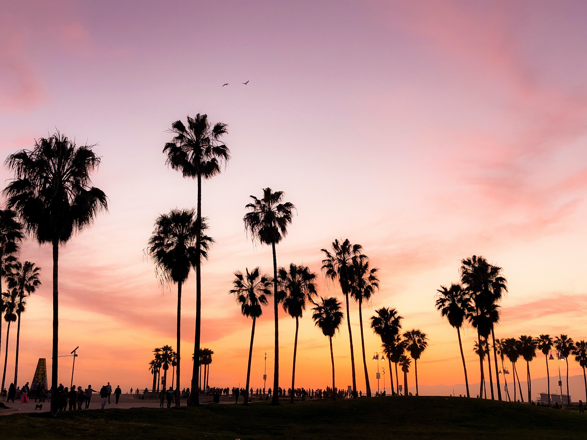
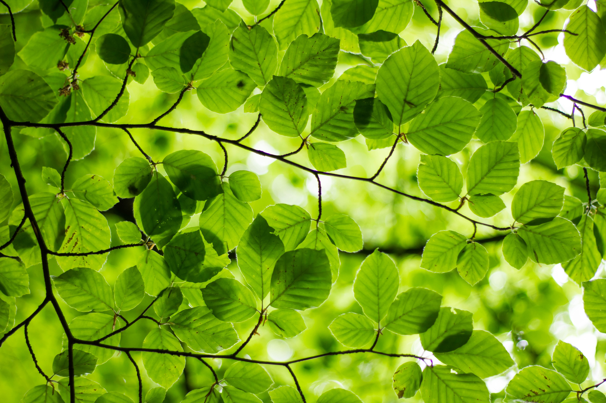
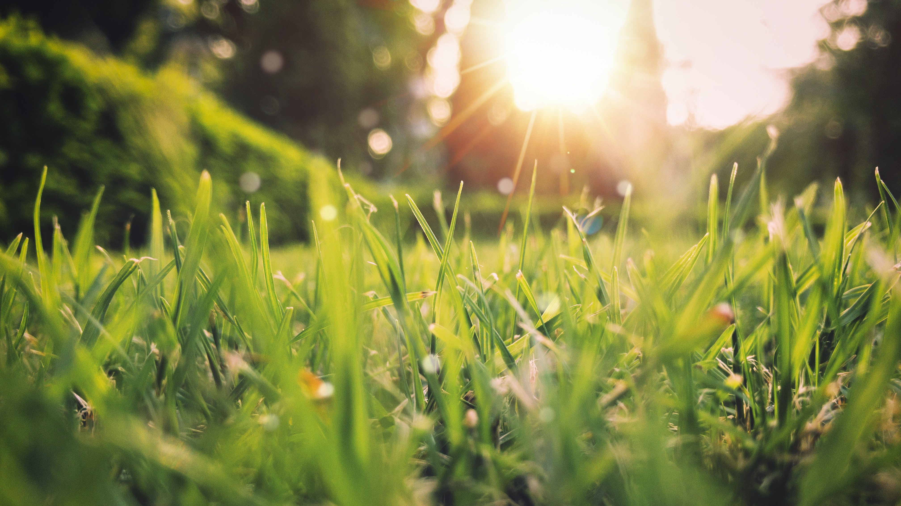

Archives
OUTDOOR WEAR FOR THE WINTER HIKER

Natural Lite is a beautiful free theme for WordPress created by Organic Themes. It’s a perfect theme for business websites with a focus on the environment. Whether you’re providing fishing charters or surf adventures, promoting local farmers markets or saving the whales, offering vegetarian…
BRINGING SOME NATURE INTO YOUR WORK SPACE
Natural Lite is a beautiful free theme for WordPress created by Organic Themes. It’s a perfect theme for business websites with a focus on the environment. Whether you’re providing fishing charters or surf adventures, promoting local farmers markets or saving the whales, offering vegetarian…
12 STRETCHES TO START YOUR DAY
Natural Lite is a beautiful free theme for WordPress created by Organic Themes. It’s a perfect theme for business websites with a focus on the environment. Whether you’re providing fishing charters or surf adventures, promoting local farmers markets or saving the whales, offering vegetarian…
CAMPFIRE TALES FOR THE FAMILY
Natural Lite is a beautiful free theme for WordPress created by Organic Themes. It’s a perfect theme for business websites with a focus on the environment. Whether you’re providing fishing charters or surf adventures, promoting local farmers markets or saving the whales, offering vegetarian…